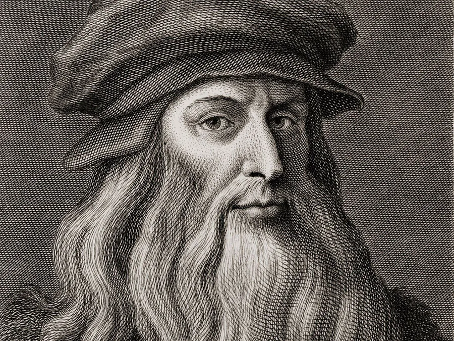

Leonardo da Vinci
(1452 - 1519)

An Italian polymath of the High Renaissance who was
active as a painter, draughtsman, engineer, scientist,
theorist, sculptor and an architect.
Born out of wedlock to a successful notary and a lower-class
woman in, or near, Vinci, he was educated in Florence by the
Italian painter and sculptor Andrea del Verrocchio. He began his
career in the city, but then spent much time in the service of
Ludovico Sforza in Milan.
The following list is a time line of Leonardo's Life:
-
1452 - born on April 15.
Leonardo was born to Ser Piero, a notary, and
Caterina, a peasant girl; his parents were never married.
-
1467 - became an Apprentice to Andrea Del Verrocchio, in Florence.
This date is an estimate, the apprenticeship could have begun a year or two later. But
even 1467 would have been a bit late according to the customs of the time: Leonardo would have
been fifteen, and most apprentices began at a younger age.
-
1469 - Lorenso and Giuliano De Medici Become New Rulers of Florence.
The two brothers took over when their father died. 1469 also marks the birth of
Machiavelli, who would be an important advisor to Lorenzo and later write the work of political philosophy
entitled The Prince (1515).
-
1472 - Leonardo becomes a Member of the Florence Painters' Guild. Birth of Copernicus.
Dante's The Divine Comedy is published.
Other famous painters to join the painters' guild in 11472 were Botticelli and Perugino.
-
1473 - Leonardo draws a landscape on the Feast of Santa Maria Delle Neve.
This is his earliest known drawing, though he probably also had a hand in Verrochio's
Baptism of Christ, which probably reached completion in or around 1473.
-
1475 - Michelangelo Born.
-
1476 - Leonardo charged with sodomy on April 9; The case is dismissed in June 16.
-
1477 - Leonardo had at least some part in the painting The Annunciation To The Virgin,
completed around this time.
-
1478 - The Pazzi Family tries to assasinate Lorenzo and Giuliano De Medici.
Lorenzo survives; Giuliano does not. This same year, Leonardo writes in his notebooks that he has begun "two Virgin Mary's".
He also paints the Portrait of Ginevra de Benci around this time.
-
1481 - Leonardo receies a commission to paint The Adoration of The Magi.
The painting was never completed, yet was-and is- considered a masterpiece. This same year,
most of the other noteworthy painters in Florence were sent to Rome to work on projects
for the Pope.
-
1482 - Leonardo moves from Florence to Milan, entering the patronage of Ludovico Sforza.
By this time, Leonardo is writing in his notebooks regularly.
-
1483 - Leonardo receives a commission to paint The Virgin of The Rocks.
Also, Raphael is born in 1483.
-
1485 - Plague in Milan; Titian born.
-
1488 - Verrochio dies
-
1489 - Leonardo studies anatomy.
-
1490 - Leonardo begins work in Earnest on the bronze horse for his patron Ludovico Sforza.
Leonardo begins a book on Landscape and Hydraulic works; it is never finished. Salai enters his household
at the age of 10.
-
1492 - Lorenzo De Medici dies; Columbus goes to the New World.
-
1493 - A woman named Caterina, possibly Leonardo's mother, possibly a servant, becomes a member of his household in Milan.
-
1494 - Savonarola takes power in Florence.
-
1495 - Leonardo begins his Last Supper in the convent of Santa Maria Delle Grazie.
-
1496 - Leonardo illustrates mathematician Fra Luca Pacioli's De Divina Proportione.
- 1498 - Leonardo decorates the walls and ceiling of the Sala Delle Asse. He also made his first
attempts at planning a flying machine around this time.
In 1498, Savonarola is burned at the stake.
-
1499 - The French army conquers Milan, Leonardo leaves.
-
1500 - Leonardo and Pacioli go to Mantua, then Leonardo continues on to Florence.
In Mantua, he draws the Portrait in Profile of Isabelle d'Este. In Florence, he paints the Virgin and Child with Saint Anne.
-
1502 - Leonardo becomes Cesare Borgia's Military engineer.
Leonardo travels around the Romagna, inspecting fortifications. He meets Machiavelli.
-
1503 - Back in Florence, Leonardo begins The Battle of Anghiari.
Also, in 1503 Florence tries to divert the Arno river away from Pisa in order to defeat Pisa in war. Leonardo and Machiavelli may have cooperated on this project.
-
1504 - On July 9, Ser Piero dies.
-
1505 - Leonardo maakes a second attempt to build a Flying Machine and begins sketches for the Mona Lisa, which he completes sometime later
In 1505, Leonardo gives up on the Battle of Anghiari, which is deteriorating as he works on it.
-
1506 - In May, Leonardo is summoned to Milan by Charles D'Amboise, the French Governor.
-
1507 - Leonardo is appointed Louis XII's painter and engineer.
He paints a second version of the Virgin of the Rocks. He meets his beautiful young assistant, Francesco Melzi. Also, he travels
to Florence in a lawsuit against his brothers of his inheritance from his uncle Francesco.
-
1508 - Michelangelo brgins work on the Sistine Chapel Frescoes.
-
1511 - Vasari born.
-
1513 - Leonardo Moves to Rome.
Living in the Vatican, he studies the properties of mirrors. It perhaps at this time that he paints the Turin Self portrait. It was in this year that Leo X (Medici)
became pope; the previous year the Medici family returned to power in Florence.
-
1515 - Around this time, Leonardo paints the painting John The Baptist.
He also constructs a mechanical lion for the coronation of the new king of France, Francis I.
-
1516 - Leonardo permanently leaves Italy for France, where he will serve Francis I in his court in Amboise.
-
1519 - In May, Leonardo dies at Cloux.
Read more about Aristotle Onassis on Wikipedia.
Timeline information taken from here.
Written and coded by Sai Kelkar.